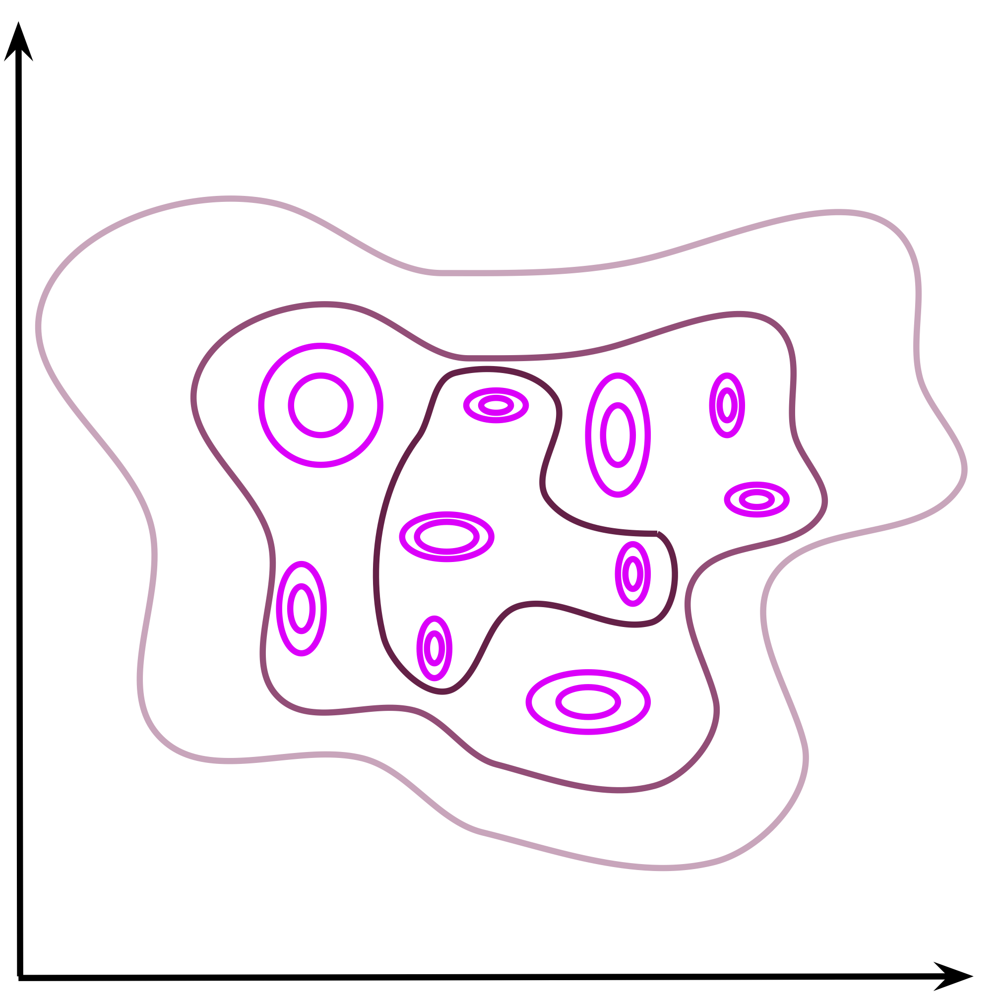
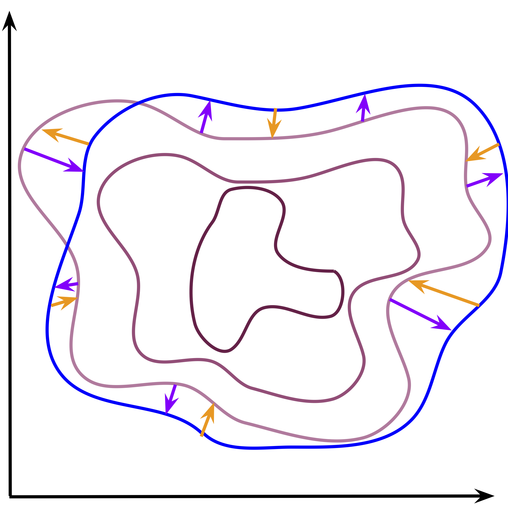
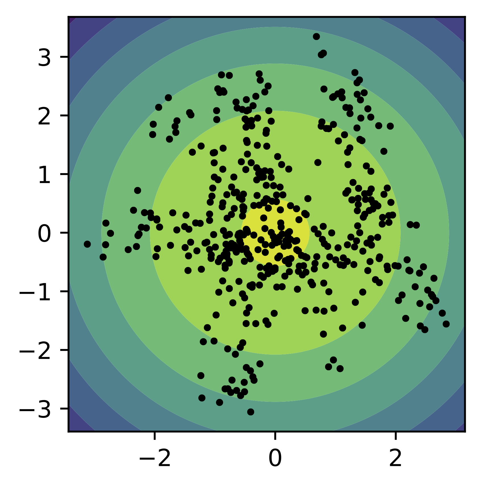
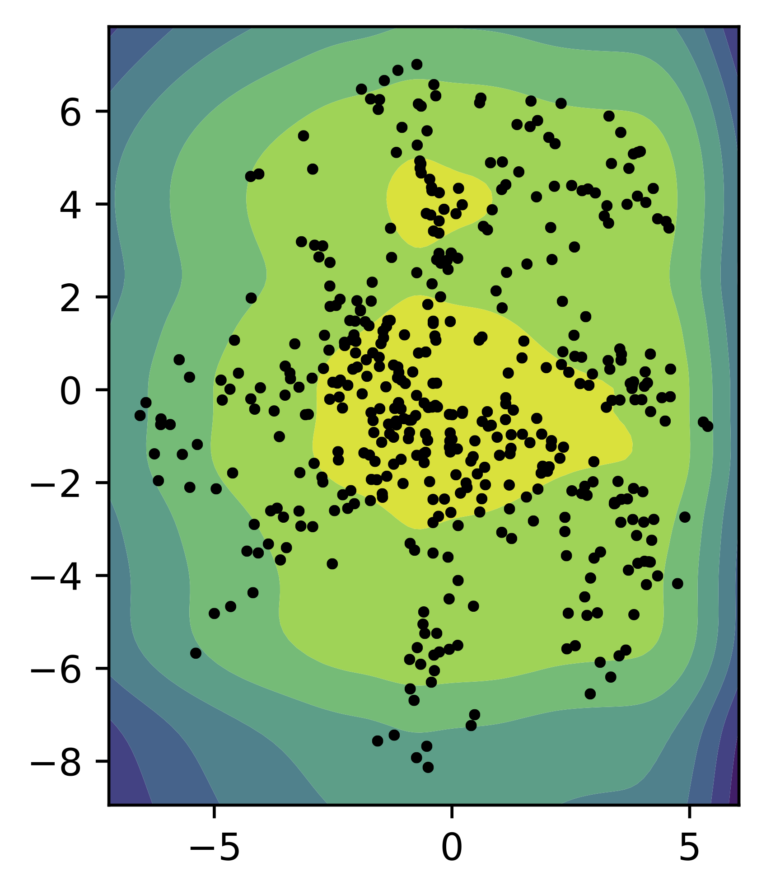
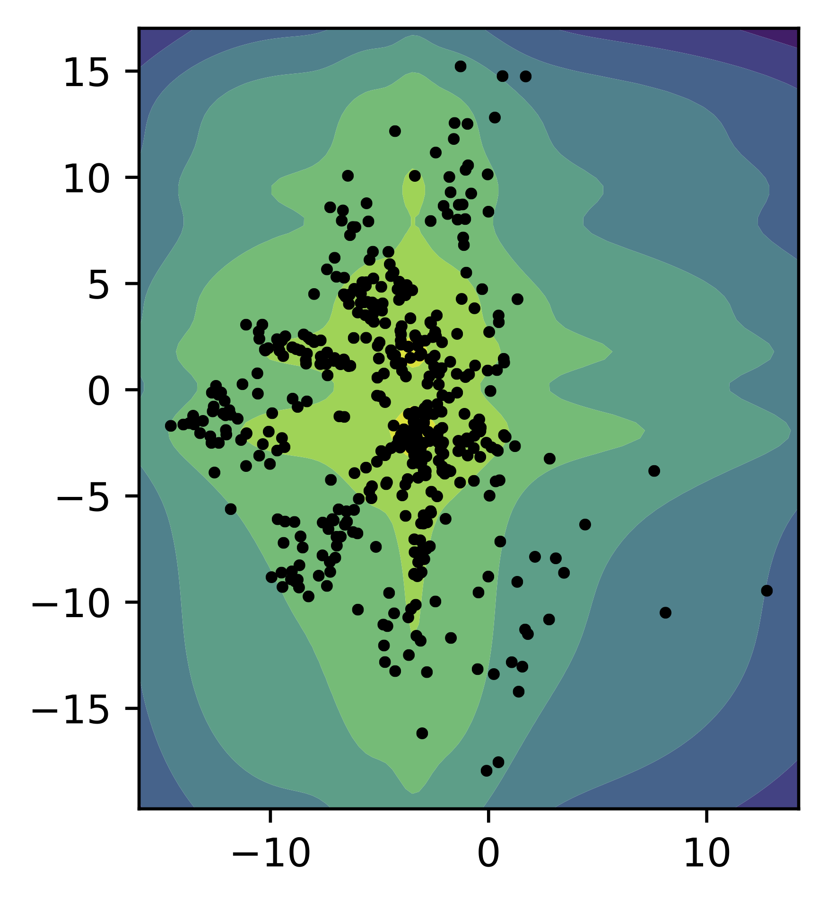
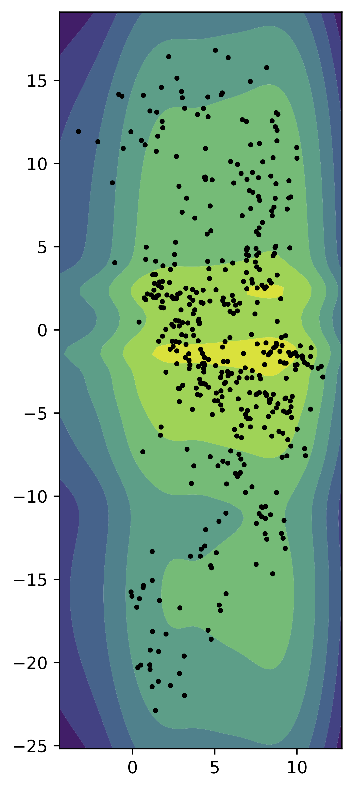
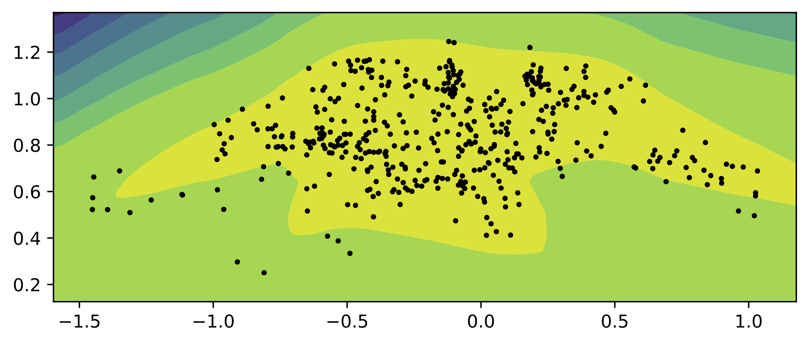

Introduction¶
In one of the previous posts, we discussed Variational Auto-Encoders (VAEs). They are latent-variable models that encode $\mathbf{x} \in \mathcal{X}^{D}$ (e.g., $\mathcal{X} = \mathbb{R}$ or $\mathcal{X} = \{0, 1, \ldots, 255\}$) to a latent space (e.g., $\mathbf{z} \in \mathbb{R}^{M}$) using a stochastic encoder $q_{\phi}(\mathbf{z}|\mathbf{x})$ and decode back using a stochastic decoder $p_{\theta}(\mathbf{x}|\mathbf{z})$. Additionally, there is a marginal distribution over $\mathbf{z}$'s, $p_{\lambda}(\mathbf{z})$. The learning objective for VAEs is the Evidence LOwer Bound (ELBO), a lower-bound to the log-likelihood function:
\begin{align} \mathbb{E}_{\mathbf{x} \sim p_{emp}(\mathbf{x})}[\ln p(\mathbf{x})] \geq & \mathbb{E}_{\mathbf{x} \sim p_{emp}(\mathbf{x})}\left[\mathbb{E}_{q_{\phi}(\mathbf{z} | \mathbf{x})}\left[ \ln p_{\theta}(\mathbf{x} | \mathbf{z}) + \ln p_{\lambda}(\mathbf{z})-\ln q_{\phi}(\mathbf{z} | \mathbf{x})\right]\right] , \end{align}where we explicitely highlight the summation over training data, namely, the expected value with respect to $\mathbf{x}$'s from the empirical distribution $p_{emp}(\mathbf{x}) = \frac{1}{N} \sum_{n=1}^{N} \delta(\mathbf{x} - \mathbf{x}_{n})$, and $\delta(\cdot)$ is the Dirac delta.
The ELBO consists of two parts, namely, the reconstruction error:
$$ RE \stackrel{\Delta}{=} \mathbb{E}_{\mathbf{x} \sim p_{emp}(\mathbf{x})}\left[\mathbb{E}_{q_{\phi}(\mathbf{z} | \mathbf{x})}\left[ \ln p_{\theta}(\mathbf{x} | \mathbf{z}) \right] \right] , $$and the regularization term between the encoder and the prior:
$$ \Omega \stackrel{\Delta}{=} \mathbb{E}_{\mathbf{x} \sim p_{emp}(\mathbf{x})}\left[\mathbb{E}_{q_{\phi}(\mathbf{z} | \mathbf{x})}\left[ \ln p_{\lambda}(\mathbf{z})-\ln q_{\phi}(\mathbf{z} | \mathbf{x}) \right] \right] . $$Further, let us take a closer look at the regularization term $\Omega$:
\begin{align} \Omega &= \mathbb{E}_{\mathbf{x} \sim p_{emp}(\mathbf{x})}\left[\mathbb{E}_{q_{\phi}(\mathbf{z} | \mathbf{x})}\left[ \ln p_{\lambda}(\mathbf{z})-\ln q_{\phi}(\mathbf{z} | \mathbf{x}) \right] \right] \\ &= \int p_{emp}(\mathbf{x}) \int q_{\phi}(\mathbf{z} | \mathbf{x}) \left[ \ln p_{\lambda}(\mathbf{z})-\ln q_{\phi}(\mathbf{z} | \mathbf{x}) \right] \mathrm{d} \mathbf{z} \mathrm{d}\mathbf{x}\\ &= \iint p_{emp}(\mathbf{x}) q_{\phi}(\mathbf{z} | \mathbf{x}) \left[ \ln p_{\lambda}(\mathbf{z})-\ln q_{\phi}(\mathbf{z} | \mathbf{x}) \right] \mathrm{d} \mathbf{z} \mathrm{d}\mathbf{x}\\ &= \iint \frac{1}{N} \sum_{n=1}^{N} \delta(\mathbf{x} - \mathbf{x}_{n}) q_{\phi}(\mathbf{z} | \mathbf{x}) \left[ \ln p_{\lambda}(\mathbf{z})-\ln q_{\phi}(\mathbf{z} | \mathbf{x}) \right] \mathrm{d} \mathbf{z} \mathrm{d}\mathbf{x}\\ &= \int \frac{1}{N} \sum_{n=1}^{N} q_{\phi}(\mathbf{z} | \mathbf{x}_{n}) \left[ \ln p_{\lambda}(\mathbf{z})-\ln q_{\phi}(\mathbf{z} | \mathbf{x}_{n}) \right] \mathrm{d} \mathbf{z} \\ &= \int \frac{1}{N} \sum_{n=1}^{N} q_{\phi}(\mathbf{z} | \mathbf{x}_{n}) \ln p_{\lambda}(\mathbf{z}) \mathrm{d} \mathbf{z} - \int \frac{1}{N} \sum_{n=1}^{N} q_{\phi}(\mathbf{z} | \mathbf{x}_{n}) \ln q_{\phi}(\mathbf{z} | \mathbf{x}_{n}) \mathrm{d} \mathbf{z} \\ &= \int q_{\phi}(\mathbf{z}) \ln p_{\lambda}(\mathbf{z}) \mathrm{d} \mathbf{z} - \int \sum_{n=1}^{N} \frac{1}{N} q_{\phi}(\mathbf{z} | \mathbf{x}_{n}) \ln q_{\phi}(\mathbf{z} | \mathbf{x}_{n}) \mathrm{d} \mathbf{z} \\ &= -\mathbb{C}\mathbb{E}\left[ q_{\phi}(\mathbf{z}) || p_{\lambda}(\mathbf{z}) \right] + \mathbb{H}\left[ q_{\phi}(\mathbf{z} | \mathbf{x}) \right] , \end{align}where we use the property of the Dirac delta: $\int \delta(a - a') f(a) \mathrm{d}a = f(a')$, and we use the notion of the aggregated posterior (Hoffman & Johnson, 2016; Makhzani et al., 2015) defined as follows:
$$ q(\mathbf{z})=\frac{1}{N} \sum_{n=1}^{N} q_{\phi}\left(\mathbf{z} | \mathbf{x}_{n}\right) . $$An example of the aggregated posterior is schematically depicted in Figure 1.

Figure 1. An example of the aggregated posterior. Individual points are encoded as Gaussians in the 2D latent space (magenta) and the mixture of variational posteriors (the aggregated posterior) is presented by contours.
Eventually, we obtain two terms: (i) the first one, $\mathbb{C}\mathbb{E}\left[ q_{\phi}(\mathbf{z}) || p_{\lambda}(\mathbf{z}) \right] $, is the cross-entropy between the aggregated posterior and the prior, (ii) the second term, $\mathbb{H}\left[ q_{\phi}(\mathbf{z} | \mathbf{x}) \right]$, is the conditional entropy of $q_{\phi}(\mathbf{z} | \mathbf{x})$ with the empirical distribution $p_{emp}(\mathbf{x})$.
I highly recommend doing this derivation step-by-step, it helps a lot in understanding what is going on here. Interestingly, there is another possibility to re-write $\Omega$ using three terms, with the total correlation (Chen et al., 2018). We will not use it here, so it is left as "homework".
Anyway, one may ask why is it useful to re-write the ELBO? The answer is rather straightforward: We can analyze it from a different perspective! In this blog post, we will focus on the prior, an important component in the generative part that is very often neglected. Many Bayesianists are stating that a prior should not be learned. But VAEs are not Bayesian models, please remember that! Besides, who says we cannot learn the prior? As we will see shortly, a non-learnable prior could be pretty annoying, especially for a generation.
What does ELBO tell us about the prior?¶
Entropy Alright, we see that $\Omega$ consists of the cross-entropy and the entropy. Let us start with the entropy since it is easier to be analyzed. While optimizing, we want to maximize the ELBO, hence, we maximize the entropy:
$$ \mathbb{H}\left[ q_{\phi}(\mathbf{z} | \mathbf{x}) \right] = - \int \sum_{n=1}^{N} \frac{1}{N} q_{\phi}(\mathbf{z} | \mathbf{x}_{n}) \ln q_{\phi}(\mathbf{z} | \mathbf{x}_{n}) \mathrm{d} \mathbf{z} . $$Before we make any conclusions, we should remember that we consider Gaussian encoders, $q_{\phi}(\mathbf{z} | \mathbf{x}) = \mathcal{N}\left(\mathbf{z}|\mu(\mathbf{x}), \sigma^{2}(\mathbf{x})\right)$. The entropy of a Gaussian distribution with a diagonal covariance matrix is equal $\frac{1}{2} \sum_{i} \ln \left[2e\pi \sigma_{i}^{2}\right]$. Then, the question is when this quantity is maximized? The answer is: $\sigma_{i}^{2} \rightarrow +\infty$. In other words, the entropy terms tries to strech the encoders as much as possible by enlarging their variances! Of course, this does not happen in practice because we use the encoder together with the decoder in the $RE$ term and the decoder tries to make the encoder as peaky as possible (i.e., ideally one $\mathbf{x}$ for one $\mathbf{z}$, like in the non-stochastic auto-encoder).
Cross-Entropy The second term in $\Omega$ is the cross-entropy:
$$ \mathbb{C}\mathbb{E}\left[ q_{\phi}(\mathbf{z}) || p_{\lambda}(\mathbf{z}) \right] = - \int q_{\phi}(\mathbf{z}) \ln p_{\lambda}(\mathbf{z}) \mathrm{d} \mathbf{z} . $$The cross-entropy term influences the VAE in a different manner. First, we can ask the question how to interpret the cross-entropy between $q_{\phi}(\mathbf{z})$ and $p_{\lambda}(\mathbf{z})$. In general, the cross-entropy tells us the average number of bits (or rather nats because we use the natural logarithm) needed to identify an event drawn from $q_{\phi}(\mathbf{z}$ if a coding scheme used for it is $p_{\lambda}(\mathbf{z})$. Notice that in $\Omega$ we have the negative cross-entropy. Since we maximize the ELBO, it means we aim for minimizing $\mathbb{C}\mathbb{E}\left[ q_{\phi}(\mathbf{z}) || p_{\lambda}(\mathbf{z}) \right]$. This makes sense because we would like $q_{\phi}(\mathbf{z})$ to match $p_{\lambda}(\mathbf{z})$. And we have accidentally touched upon the most important issue here: What do we really want here? The cross-entropy forces the aggregated posterior to match the prior! That is the reason why we have this term here. If you think about it, it is a beautiful result that gives another connection between VAEs and the information theory.
Alright, so we see what the cross-entropy does, but there are two possibilities here. First, the prior is fixed (non-learnable), e.g., the standard Gaussian prior. Then, optimizing the cross-entropy pushes the aggregated posterior to match the prior. It is schematically depicted in Figure 2. The prior acts like an anchor and the amoeba of the aggregated posterior moves so that to fit the prior. In practice, this optimization process is troublesome because the decoded forces the encoder to be peaked and, in the end, it is almost impossible to match a fixed-shaped prior. As a result, we obtain holes, namely, regions in the latent space where the aggregated posterior assigns low probability while the prior assigns (relatively) high probability (see a dark gray ellipse in Figure 2). This issue is especially apparent in generations because sampling from the prior, from the hole, may result in a sample that is of an extremely low quality. You can read more about it in (Rezende & Viola, 2018).

Figure 2. An example of the effect of the cross-entropy optimization with a non-learnable prior. The aggregated posterior (purple contours) tries to match the non-learnable prior (in blue). The purple arrows indicate the change of the aggregated posterior. An example of a hole is presented as a dark gray ellipse.
On the other hand, if we consider a learnable prior, the situation looks different. The optimization allows to change the aggregated posterior and the prior. As the consequence, both distributions try to match each other (see Figure 3). The problem of holes is then less apparent, especially if the prior is flexible enough. However, we can face other optimization issues when the prior and the aggregated posteriors chase each other. In practice, the learnable prior seems to be a better option but it is still an open question whether training all components at once is the best approach. Moreover, the learnable prior does not impose any specific constraint on the latent representation, e.g., sparsity. This could be another problem that would result in undesirable problems (e.g., non-smooth encoders).

Figure 3. An example of the effect of the cross-entropy optimization with a learnable prior. The aggregated posterior (purple contours) tries to match the learnable prior (blue contours). Notice that the aggregated posterior is modified to fit the prior (purple arrows), but also the prior is updated to cover the aggregated posterior (orange arrows).
Eventually, we can ask the fundamental question: What is the best prior then?! The answer is already known and is hidden in the cross-entropy term: It is the aggregated posterior. If we take $p_{\lambda}(\mathbf{z}) = \sum_{n=1}^{N} \frac{1}{N} q_{\phi}(\mathbf{z} | \mathbf{x}_{n})$, then, theoretically, the cross-entropy equals the entropy of $q_{\phi}(\mathbf{z})$ and the regularization term $\Omega$ is smallest. However, in practice, this is infeasible because (i) we cannot sum over tens of thousands of points and backpropagate through them, (i) this result is fine from the theoretical point of view, however, the optimization process is stochastic and could cause additional errors, (iii) as mentioned earlier, choosing the aggregated posterior as the prior does not constrain the latent representation in any obvious manner and, thus, the encoder could behave unpredictably, (iv) the aggregated posterior may work well if the get $N \rightarrow +\infty$ points, because then we can get any distribution, however, this is not the case in practice and it contradicts also (i). As a result, we can keep this theoretical solution in mind and formulate approximations to it that are computationally tractable. In the next sections, we will discuss a few of them.
Standard Gaussian¶
The vanilla implementation of the VAE assumes a standard Gaussian marginal (prior) over $\mathbf{z}$, $p_{\lambda}(\mathbf{z}) = \mathcal{N}(\mathbf{z}|0,\mathrm{I})$. This prior is simple, non-trainable (i.e., no extra parameters to learn), and easy to implement. In other words, it is amazing! However, as discussed above, the standard normal distribution could lead to very poor hidden representations with holes resulting from the mismatch between the aggregated posterior and the prior.
To strengthen our discussion, we train a small VAE with the standard Gaussian prior and two-dimensional latent space. In Figure 4, we present samples from the encoder for the test data (black dots) and the contour plot for the standard prior. We can clearly see holes where the aggregated posterior does not assign any points (i.e., the mismatch between the prior and the aggregated posterior).

Figure 4. An example of the standard Gaussian prior (contours) and the samples from the aggregated posterior (black dots).
The code for the standard Gaussian prior is presented below.
class StandardPrior(nn.Module):
def __init__(self, L=2):
super(StandardPrior, self).__init__()
self.L = L
# params weights
self.means = torch.zeros(1, L)
self.logvars = torch.zeros(1, L)
def get_params(self):
return self.means, self.logvars
def sample(self, batch_size):
return torch.randn(batch_size, self.L)
def log_prob(self, z):
return log_standard_normal(z)
Mixture of Gaussians¶
If we take a closer look at the aggregated posterior, we immediately notice that it is a mixture model, and a mixture of Gaussians, to be more precise. Therefore, we can use the Mixture of Gaussians (MoG) prior with $K$ components:
$$ p_{\lambda}(\mathbf{z}) = \sum_{k=1}^{K} w_{k} \mathcal{N}(\mathbf{z}|\mu_k, \sigma_{k}^{2}) , $$where $\lambda = \left\{ \{w_k\}, \{\mu_k\}, \{\sigma_{k}^{2}\} \right\}$ are trainable parameters.
Similarly to the standard Gaussian prior, we train a small VAE with the mixture of Gaussians prior (with $K=16$) and two-dimensional latent space. In Figure 5, we present samples from the encoder for the test data (black dots) and the contour plot for the MoG prior. Comparing to the standard Gaussian prior, the MoG prior fits better the aggregated posterior, allowing to patch holes.

Figure 5. An example of the MoG prior (contours) and the samples from the aggregated posterior (black dots).
An example of the code is presented below.
class MoGPrior(nn.Module):
def __init__(self, L, num_components):
super(MoGPrior, self).__init__()
self.L = L
self.num_components = num_components
# params
self.means = nn.Parameter(torch.randn(num_components, self.L)*multiplier)
self.logvars = nn.Parameter(torch.randn(num_components, self.L))
# mixing weights
self.w = nn.Parameter(torch.zeros(num_components, 1, 1))
def get_params(self):
return self.means, self.logvars
def sample(self, batch_size):
# mu, lof_var
means, logvars = self.get_params()
# mixing probabilities
w = F.softmax(self.w, dim=0)
w = w.squeeze()
# pick components
indexes = torch.multinomial(w, batch_size, replacement=True)
# means and logvars
eps = torch.randn(batch_size, self.L)
for i in range(batch_size):
indx = indexes[i]
if i == 0:
z = means[[indx]] + eps[[i]] * torch.exp(logvars[[indx]])
else:
z = torch.cat((z, means[[indx]] + eps[[i]] * torch.exp(logvars[[indx]])), 0)
return z
def log_prob(self, z):
# mu, lof_var
means, logvars = self.get_params()
# mixing probabilities
w = F.softmax(self.w, dim=0)
# log-mixture-of-Gaussians
z = z.unsqueeze(0) # 1 x B x L
means = means.unsqueeze(1) # K x 1 x L
logvars = logvars.unsqueeze(1) # K x 1 x L
log_p = log_normal_diag(z, means, logvars) + torch.log(w) # K x B x L
log_prob = torch.logsumexp(log_p, dim=0, keepdim=False) # B x L
return log_prob
VampPrior¶
In (Tomczak & Welling, 2018), it was noticed that we can improve on the MoG prior and approximate the aggregated posterior by introducing pseudo-inputs:
$$ p_{\lambda}(\mathbf{z}) = \frac{1}{N} \sum_{k=1}^{K} q_{\phi}(\mathbf{z}|\mathbf{u}_{k}), $$where $\lambda = \left\{ \phi, \{\mathbf{u}_{k}^{2}\} \right\}$ are trainable parameters, $\mathbf{u}_{k} \in \mathcal{X}^{D}$ is a pseudo-input. Notice that $\phi$ is a part of the trainable parameters. The idea of pseudo-input is to randomly initialize objects that mimick observable variables (e.g., images) and learn them by backpropagation.
This approximation to the aggregated posterior is called the variational mixture of posterior prior, VampPrior for short. In (Tomczak & Welling, 2018) you can find some interesting properties and further analysis of the Vampprior. The main drawback of the VampPrior lies in initializing the pseudo-inputs, however, it serves as a good proxy to the aggregated posterior that improves the generative quality of the VAE, e.g., (Alemi et al., 2018; Lavda et al., 2020; Lin & Clark, 2020).
(Alemi et al., 2018) presented a nice connection of the VampPrior with the information-theoretic perspective on the VAE. They further proposed to introduce learnable probabilities of the components:
$$ p_{\lambda}(\mathbf{z}) = \sum_{k=1}^{K} w_{k} q_{\phi}(\mathbf{z}|\mathbf{u}_{k}), $$to allow the VampPrior to select more relevant components (i.e., pseudo-inputs).
As in the previous cases, we train a small VAE with the VampPrior (with $K=16$) and a two-dimensional latent space. In Figure 6, we present samples from the encoder for the test data (black dots) and the contour plot for the VampPrior. Similar to the MoG prior, the VampPrior fits better the aggregated posterior and has fewer holes. In this case, we can see that the VampPrior allows the encoders to spread across the latent space (notice the values).

Figure 6. An example of the VampPrior (contours) and the samples from the aggregated posterior (black dots).
An example of an implementation of the VampPrior is presented below.
class VampPrior(nn.Module):
def __init__(self, L, D, num_vals, encoder, num_components, data=None):
super(VampPrior, self).__init__()
self.L = L
self.D = D
self.num_vals = num_vals
self.encoder = encoder
# pseudoinputs
u = torch.rand(num_components, D) * self.num_vals
self.u = nn.Parameter(u)
# mixing weights
self.w = nn.Parameter(torch.zeros(self.u.shape[0], 1, 1)) # K x 1 x 1
def get_params(self):
# u->encoder->mu, lof_var
mean_vampprior, logvar_vampprior = self.encoder.encode(self.u) #(K x L), (K x L)
return mean_vampprior, logvar_vampprior
def sample(self, batch_size):
# u->encoder->mu, lof_var
mean_vampprior, logvar_vampprior = self.get_params()
# mixing probabilities
w = F.softmax(self.w, dim=0) # K x 1 x 1
w = w.squeeze()
# pick components
indexes = torch.multinomial(w, batch_size, replacement=True)
# means and logvars
eps = torch.randn(batch_size, self.L)
for i in range(batch_size):
indx = indexes[i]
if i == 0:
z = mean_vampprior[[indx]] + eps[[i]] * torch.exp(logvar_vampprior[[indx]])
else:
z = torch.cat((z, mean_vampprior[[indx]] + eps[[i]] * torch.exp(logvar_vampprior[[indx]])), 0)
return z
def log_prob(self, z):
# u->encoder->mu, lof_var
mean_vampprior, logvar_vampprior = self.get_params() # (K x L) & (K x L)
# mixing probabilities
w = F.softmax(self.w, dim=0) # K x 1 x 1
# log-mixture-of-Gaussians
z = z.unsqueeze(0) # 1 x B x L
mean_vampprior = mean_vampprior.unsqueeze(1) # K x 1 x L
logvar_vampprior = logvar_vampprior.unsqueeze(1) # K x 1 x L
log_p = log_normal_diag(z, mean_vampprior, logvar_vampprior) + torch.log(w) # K x B x L
log_prob = torch.logsumexp(log_p, dim=0, keepdim=False) # B x L
return log_prob # B
GTM: Generative topographic mapping¶
In fact, we can use any density estimator to model the prior. In (Bishop et al., 1998) a density estimator called generative topographic mapping (GTM) was proposed that defines a grid of $K$ points in a low-dimensional space, $\mathbf{u} \in \mathbb{R}^{C}$, namely:
$$ p(\mathbf{u}) = \sum_{k=1}^{K} w_{k} \delta(\mathbf{u} - \mathbf{u}_{k}) $$that is further transformed to a higher-dimensional space by a transformation $g_{\gamma}$. The transformation $g_{\gamma}$ predicts parameters of a distribution, e.g., the Gaussian distribution, thus, $g_{\gamma}: \mathbb{R}^{C} \rightarrow \mathbb{R}^{2\times M}$. Eventually, we can define the distribution as follows:
\begin{align} p_{\lambda}(\mathbf{z}) &= \int p(\mathbf{u}) \mathcal{N}\left( \mathbf{z} | \mu_{g}(\mathbf{u}), \sigma_{g}^{2}(\mathbf{u}) \right) \mathrm{d} \mathbf{u} \\ &= \sum_{k=1}^{K} w_{k} \mathcal{N}\left( \mathbf{z} | \mu_{g}(\mathbf{u}_k), \sigma_{g}^{2}(\mathbf{u}_k) \right) , \end{align}where $\mu_{g}(\mathbf{u}), \sigma_{g}^{2}$ result from the transformation $g_{\gamma}(\mathbf{u})$.
For instance, for $C=2$ and $K=3$, we can define the following grid: $\mathbf{u} \in \{ [-1, -1], [-1, 0], [-1, 1], [0, -1], [0, 1], [0, 1], [1, -1], [1, 0], [1, -1] \}$. Notice that the grid is fixed! And only the transformation (e.g., a neural network) $g_{\gamma}$ is trained.
As in the previous cases, we train a small VAE with the GTM-based prior (with $K=16$, i.e., a $4\times 4$ grid) and two-dimensional latent space. In Figure 7, we present samples from the encoder for the test data (black dots) and the contour plot for the GTM-based prior. Similar to the MoG prior and the VampPrior, the GTM-based prior learns a pretty flexible distribution.

Figure 7. An example of the GTM-based prior (contours) and the samples from the aggregated posterior (black dots).
An example of an implementation of the GTM-based prior is presented below.
class GTMPrior(nn.Module):
def __init__(self, L, gtm_net, num_components, u_min=-1., u_max=1.):
super(GTMPrior, self).__init__()
self.L = L
# 2D manifold
self.u = torch.zeros(num_components**2, 2) # K**2 x 2
u1 = torch.linspace(u_min, u_max, steps=num_components)
u2 = torch.linspace(u_min, u_max, steps=num_components)
k = 0
for i in range(num_components):
for j in range(num_components):
self.u[k,0] = u1[i]
self.u[k,1] = u2[j]
k = k + 1
# gtm network: u -> z
self.gtm_net = gtm_net
# mixing weights
self.w = nn.Parameter(torch.zeros(num_components**2, 1, 1))
def get_params(self):
# u->z
h_gtm = self.gtm_net(self.u) #K**2 x 2L
mean_gtm, logvar_gtm = torch.chunk(h_gtm, 2, dim=1) # K**2 x L and K**2 x L
return mean_gtm, logvar_gtm
def sample(self, batch_size):
# u->z
mean_gtm, logvar_gtm = self.get_params()
# mixing probabilities
w = F.softmax(self.w, dim=0)
w = w.squeeze()
# pick components
indexes = torch.multinomial(w, batch_size, replacement=True)
# means and logvars
eps = torch.randn(batch_size, self.L)
for i in range(batch_size):
indx = indexes[i]
if i == 0:
z = mean_gtm[[indx]] + eps[[i]] * torch.exp(logvar_gtm[[indx]])
else:
z = torch.cat((z, mean_gtm[[indx]] + eps[[i]] * torch.exp(logvar_gtm[[indx]])), 0)
return z
def log_prob(self, z):
# u->z
mean_gtm, logvar_gtm = self.get_params()
# log-mixture-of-Gaussians
z = z.unsqueeze(0) # 1 x B x L
mean_gtm = mean_gtm.unsqueeze(1) # K**2 x 1 x L
logvar_gtm = logvar_gtm.unsqueeze(1) # K**2 x 1 x L
w = F.softmax(self.w, dim=0)
log_p = log_normal_diag(z, mean_gtm, logvar_gtm) + torch.log(w) # K**2 x B x L
log_prob = torch.logsumexp(log_p, dim=0, keepdim=False) # B x L
return log_prob
gtm_net = nn.Sequential(nn.Linear(2, M), nn.Tanh(),
nn.Linear(M, M), nn.Tanh(),
nn.Linear(M, 2 * L))
GTM-VampPrior¶
As mentioned earlier, the main issue with the VampPrior is the initialization of the pseudo-inputs. Instead, we can use the idea of the GTM to learn the pseudoinputs. Combining these two approaches, we get the following prior:
$$ p_{\lambda}(\mathbf{z}) = \sum_{k=1}^{K} w_{k} q_{\phi} \left( \mathbf{z} | g_{\gamma}(\mathbf{u}_k) \right) , $$where we first define a grid in a low-dimensional space, $\{\mathbf{u}_{k}\}$, and then transform them to $\mathcal{X}^{D}$ using the transformation $g_{\gamma}$.
Now, we train a small VAE with the GTM-VampPrior (with $K=16$, i.e., a $4\times 4$ grid) and a two-dimensional latent space. In Figure 8, we present samples from the encoder for the test data (black dots) and the contour plot for the GTM-VampPrior. Again, this mixture-based prior allows to wrap the points (the aggregated posterior) and assign the probability to proper regions.

Figure 8. An example of the GTM-VampPrior (contours) and the samples from the aggregated posterior (black dots).
An example of an implementation of the GTM-VampPrior is presented below.
class GTMVampPrior(nn.Module):
def __init__(self, L, D, gtm_net, encoder, num_points, u_min=-10., u_max=10., num_vals=255):
super(GTMVampPrior, self).__init__()
self.L = L
self.D = D
self.num_vals = num_vals
self.encoder = encoder
# 2D manifold
self.u = torch.zeros(num_points**2, 2) # K**2 x 2
u1 = torch.linspace(u_min, u_max, steps=num_points)
u2 = torch.linspace(u_min, u_max, steps=num_points)
k = 0
for i in range(num_points):
for j in range(num_points):
self.u[k,0] = u1[i]
self.u[k,1] = u2[j]
k = k + 1
# gtm network: u -> x
self.gtm_net = gtm_net
# mixing weights
self.w = nn.Parameter(torch.zeros(num_points**2, 1, 1))
def get_params(self):
# u->gtm_net->u_x
h_gtm = self.gtm_net(self.u) #K x D
h_gtm = h_gtm * self.num_vals
# u_x->encoder->mu, lof_var
mean_vampprior, logvar_vampprior = self.encoder.encode(h_gtm) #(K x L), (K x L)
return mean_vampprior, logvar_vampprior
def sample(self, batch_size):
# u->encoder->mu, lof_var
mean_vampprior, logvar_vampprior = self.get_params()
# mixing probabilities
w = F.softmax(self.w, dim=0)
w = w.squeeze()
# pick components
indexes = torch.multinomial(w, batch_size, replacement=True)
# means and logvars
eps = torch.randn(batch_size, self.L)
for i in range(batch_size):
indx = indexes[i]
if i == 0:
z = mean_vampprior[[indx]] + eps[[i]] * torch.exp(logvar_vampprior[[indx]])
else:
z = torch.cat((z, mean_vampprior[[indx]] + eps[[i]] * torch.exp(logvar_vampprior[[indx]])), 0)
return z
def log_prob(self, z):
# u->encoder->mu, lof_var
mean_vampprior, logvar_vampprior = self.get_params()
# mixing probabilities
w = F.softmax(self.w, dim=0)
# log-mixture-of-Gaussians
z = z.unsqueeze(0) # 1 x B x L
mean_vampprior = mean_vampprior.unsqueeze(1) # K x 1 x L
logvar_vampprior = logvar_vampprior.unsqueeze(1) # K x 1 x L
log_p = log_normal_diag(z, mean_vampprior, logvar_vampprior) + torch.log(w) # K x B x L
log_prob = torch.logsumexp(log_p, dim=0, keepdim=False) # B x L
return log_prob
Flow-based prior¶
The last distribution we want to discuss here is a flow-based prior. Since flow-based models can be used to estimate any distribution, it is almost obvious to use them for approximating the aggregated posterior. Here, we use the implementation of the RealNVP presented before.
As in the previous cases, we train a small VAE with the flow-based prior and two-dimensional latent space. In Figure 9, we present samples from the encoder for the test data (black dots) and the contour plot for the flow-based prior. Similar to the previous mixture-based priors, the flow-based prior allows approximating the aggregated posterior very well. This is in line with many papers using flows as the prior in the VAE (Chen et al., 2016; Gatopoulos & Tomczak, 2020), however, we must remember that the flexibility of the flow-based prior comes with the cost of an increased number of parameters and potential training issues inherited from the flows.

Figure 9. An example of the flow-based prior (contours) and the samples from the aggregated posterior (black dots).
An example of an implementation of the flow-based prior is presented below.
class FlowPrior(nn.Module):
def __init__(self, nets, nett, num_flows, D=2):
super(FlowPrior, self).__init__()
self.D = D
self.t = torch.nn.ModuleList([nett() for _ in range(num_flows)])
self.s = torch.nn.ModuleList([nets() for _ in range(num_flows)])
self.num_flows = num_flows
def coupling(self, x, index, forward=True):
(xa, xb) = torch.chunk(x, 2, 1)
s = self.s[index](xa)
t = self.t[index](xa)
if forward:
#yb = f^{-1}(x)
yb = (xb - t) * torch.exp(-s)
else:
#xb = f(y)
yb = torch.exp(s) * xb + t
return torch.cat((xa, yb), 1), s
def permute(self, x):
return x.flip(1)
def f(self, x):
log_det_J, z = x.new_zeros(x.shape[0]), x
for i in range(self.num_flows):
z, s = self.coupling(z, i, forward=True)
z = self.permute(z)
log_det_J = log_det_J - s.sum(dim=1)
return z, log_det_J
def f_inv(self, z):
x = z
for i in reversed(range(self.num_flows)):
x = self.permute(x)
x, _ = self.coupling(x, i, forward=False)
return x
def sample(self, batch_size):
z = torch.randn(batch_size, self.D)
x = self.f_inv(z)
return x.view(-1, self.D)
def log_prob(self, x):
z, log_det_J = self.f(x)
log_p = (log_standard_normal(z) + log_det_J.unsqueeze(1))
return log_p
Code¶
The full code (with auxiliary functions) that you can play with is available here: [link].
That's it?¶
In practice, we can use any density estimator to model $p_{\lambda}(\mathbf{z})$. For instance, we can use an autoregressive model (Habibian et al., 2019) or more advanced approaches like resampled priors (Bauer & Mnih, 2019) or hierarchical priors (Lin & Clark, 2020). Therefore, there are many options! However, there is still an open question how to do that and what role the prior (the marginal) should play. As I mentioned in the beginning, Bayesianists would say that the marginal should impose some constraints on the latent space or, in other words, our prior knowledge about it. I am a Bayesiast deep down in my heart and this way of thinking is very appealing to me. However, it is still unclear what is a good latent representation. This question is as old as mathematical modeling. I think that it would be interesting to look at optimization techniques, maybe applying a gradient-based method to all parameters/weights at once is not the best solution. Anyhow, I am pretty sure that modeling the prior is more important than many people think and plays a crucial role in VAEs.
References¶
(Alemi et al., 2018) Alemi, A., Poole, B., Fischer, I., Dillon, J., Saurous, R. A., & Murphy, K. (2018, July). Fixing a broken ELBO. International Conference on Machine Learning (pp. 159-168). PMLR.
(Bauer & Mnih, 2019) Bauer, M., & Mnih, A. (2019). Resampled priors for variational autoencoders. In The 22nd International Conference on Artificial Intelligence and Statistics (pp. 66-75). PMLR.
(Bishop et al., 1998) Bishop, C. M., Svensen, M., & Williams, C. K. (1998). GTM: The generative topographic mapping. Neural computation, 10(1), 215-234.
(Chen et al., 2016) Chen, X., Kingma, D. P., Salimans, T., Duan, Y., Dhariwal, P., Schulman, J., Sutskever, I., & Abbeel, P. (2016). Variational lossy autoencoder. arXiv preprint arXiv:1611.02731.
(Chen et al., 2018) Chen, R. T., Li, X., Grosse, R., & Duvenaud, D. (2018). Isolating sources of disentanglement in VAEs. In Proceedings of the 32nd International Conference on Neural Information Processing Systems (pp. 2615-2625).
(Gatopoulos & Tomczak, 2020) Gatopoulos, I., & Tomczak, J. M. (2020). Self-Supervised Variational Auto-Encoders. arXiv preprint arXiv:2010.02014.
(Habibian et al., 2019) Habibian, A., Rozendaal, T. V., Tomczak, J. M., & Cohen, T. S. (2019). Video compression with rate-distortion autoencoders. In Proceedings of the IEEE International Conference on Computer Vision (pp. 7033-7042).
(Hoffman & Johnson, 2016) Hoffman, M. D., & Johnson, M. J. (2016). Elbo surgery: yet another way to carve up the variational evidence lower bound. In Workshop in Advances in Approximate Bayesian Inference, NIPS (Vol. 1, p. 2).
(Lavda et al., 2020) Lavda, F., Gregorová, M., & Kalousis, A. (2020). Data-dependent conditional priors for unsupervised learning of multimodal data. Entropy, 22(8), 888.
(Lin & Clark, 2020) Lin, S., & Clark, R. (2020). Ladder: Latent data distribution modelling with a generative prior. arXiv preprint arXiv:2009.00088.
(Rezende & Viola, 2018) Rezende, D. J., & Viola, F. (2018). Taming vaes. arXiv preprint arXiv:1810.00597.
(Tomczak & Welling, 2018) Tomczak, J., & Welling, M. (2018). VAE with a VampPrior. Artificial Intelligence and Statistics (pp. 1214-1223). PMLR.